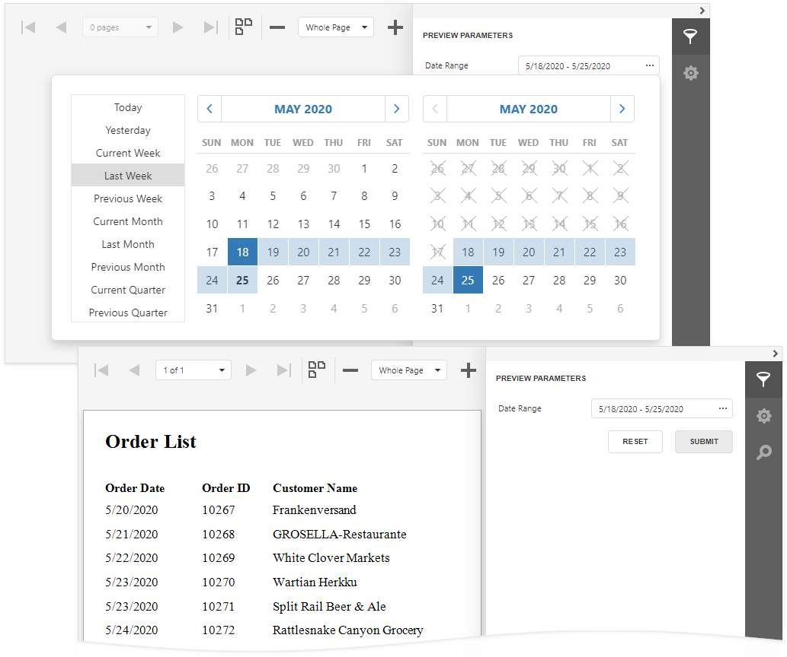

Date Range Report Parameters
This document describes how to create a date range parameter and filter report data by the specified dates.

Perform the steps below to add a date range parameter to a report.
Switch to the Field List and click the
 button next to Parameters.
button next to Parameters.
Specify the options below in the invoked Add Parameter dialog and click OK.
Name
The parameter's name.
Description
The parameter's description displayed to users.
Type
The parameter's data type. Set it to Date to create a date range.
Visible
This option enables the Preview to show the parameter's editor in the Parameters panel. See Use the Parameters Panel to Ask for User Input for more information.
Value Source
Settings that are used to generate the parameter's predefined values. Set this property to Range Parameters. The Start Parameter and End Parameter sections appear where you can configure the inner parameters.

Use the Start Parameter and End Parameter's Value properties to specify default values. Use the Expression properties to conditionally specify parameter values or to bind them to fields or other parameters. Click the Expression property's ellipsis button and specify an expression in the invoked Expression Editor.

Use the start and end parameter names in the report's filter string to filter data by the created date range. Select the report, click the Filter String property's ellipsis button in the Properties Panel, and construct the filter string in the invoked Filter Editor.

Note
The start and end parameter values store the selected day's midnight time. For instance, if you choose 10/15/2019, the DateTime value is 10/15/2019 12:00:00 AM. If your date fields include non-midnight time, records for the end date 10/15/2019 are excluded from a report. Use the GetDate() function in the Filter Editor to include data for the 10/15/2019 date.

When you switch to Preview, the Parameters panel displays the date range parameter. After you submit a start and end date, a report document is displayed with filtered data.